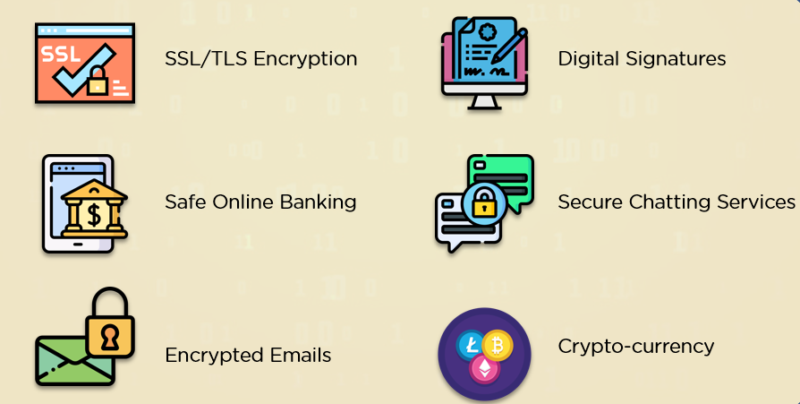

Understanding Cryptography
Cryptography plays a vital role in ensuring the confidentiality, integrity, and authenticity of sensitive information. It transforms plain data into encrypted forms that can only be read by authorized parties, preventing unauthorized access and manipulation.
Key Techniques and Concepts
Cryptographic methods include symmetric encryption, where the same key is used for both encryption and decryption, and asymmetric encryption, which utilizes a pair of public and private keys. Hashing generates a fixed-size hash value from input data, ensuring data integrity.
Modern Applications of Cryptography
Cryptography is crucial in securing online transactions, protecting user data, and enabling secure communications. Applications include blockchain technology, digital signatures, and end-to-end encryption in messaging apps.
Advantages of Cryptographic Security
The primary advantages of cryptography include the protection of data privacy, prevention of data tampering, and assurance of data authenticity. It plays a crucial role in online banking, e-commerce, and secure messaging, safeguarding sensitive information and maintaining user trust.
⬅ Go Back